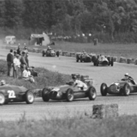
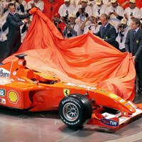

HISTORIAS

1950 - 1959
Acontecimientos
- Inauguración de la primera temporada de la Fórmula 1 con el Gran Premio de Gran Bretaña en Silverstone.
- Giuseppe Farina se convierte en el primer campeón mundial de la Fórmula 1.
- Juan Manuel Fangio se convierte en una de las figuras más dominantes de la década, ganando cinco campeonatos mundiales.
- Ferrari, Mercedes-Benz y Maserati se destacan como equipos principales.

1960 - 1966
Acontecimientos
- Inicio de la década de los "garagistas" con equipos privados que participan activamente en la Fórmula 1.
- Phil Hill se convierte en el primer piloto estadounidense en ganar el campeonato mundial de Fórmula 1.
- Introducción de los motores Ford Cosworth DFV, que se convierten en los motores dominantes de la Fórmula 1 durante varios años.
1970 - 1978
Acontecimientos
- Emerson Fittipaldi se convierte en el campeón mundial más joven hasta ese momento en 1972.
- La rivalidad épica entre Niki Lauda y James Hunt es uno de los momentos más destacados de la historia de la Fórmula 1, inmortalizada en la película "Rush".
- Lotus introduce el primer coche con efecto suelo, revolucionando el diseño de los monoplazas.
1980 - 1988
Acontecimientos
- Inicio de la era de la turbocargadores, con motores más potentes pero menos fiables.
- Ayrton Senna y Alain Prost tienen una intensa rivalidad en McLaren.

1990 - 1994
Acontecimientos
- Ayrton Senna y Alain Prost chocan en el Gran Premio de Japón, lo que lleva a la descalificación de Senna y al título de Prost.
- Trágica muerte de Ayrton Senna en el Gran Premio de San Marino.

2000 - 2021
Acontecimientos
- Michael Schumacher domina la Fórmula 1 con Ferrari, ganando cinco campeonatos consecutivos.
- Inicio de la era de la dominación de Sebastian Vettel con Red Bull Racing.
- Introducción de las unidades de potencia híbridas en la Fórmula 1.
- Lewis Hamilton empata con Michael Schumacher con siete campeonatos mundiales.